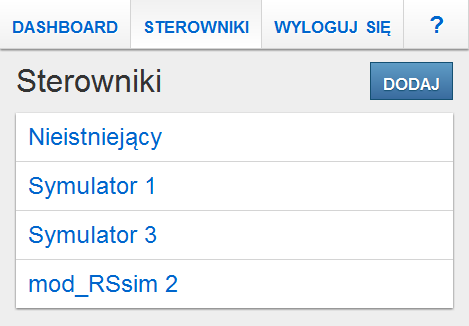

Wygrzewanie opraw LED
Wstęp
Niniejszy dokument stanowi dokumentację użytkownika dla aplikacji Wygrzewania opraw LED.
Uruchomienie aplikacji odbywa się poprzez wpisanie przez użytkownika adresu IP i portu serwera w przeglądarce internetowej. Dane te różnią się w zależności od tego, w jakiej sieci znajduje się użytkownik. Dla sieci bezprzewodowej ML_WLAN, adres to http://192.168.21.58/, natomiast dla sieci przewodowej - http://161.87.64.20:8081/.
Wymagania
Do poprawnego korzystania z aplikacji, użytkownik musi mieć zainstalowaną jedną z popularnych, aktualnych przeglądarek internetowych.


Interfejs
Komunikaty

Przykład komunikatu
Po wykonaniu niektórych akcji mogą zostać wyświetlonone komunikaty informujące użytkownika o powodzeniu lub porażce. Wyświetlane komunikaty przykrywają menu główne. Aby móc ponownie korzystać z menu, komunikat należy zamknąć. Można to zrobić poprzez pojedyńcze kliknięcie na obszarze zajmowanym przez menu (a tym samym komunikat). Niektóre komunikaty same znikną po upływie kilku sekund.
Komunikaty, ze względu na przekazywaną informację, różnią się od siebie kolorem tła.
Komunikat informujący o pomyślnym wykonaniu akcji wygląda następująco:
Natomiast komunikat informujący o nieudanym wykonaniu akcji wygląda tak:
Okna dialogowe
Kliknięcie niektórych akcji sprawi, że na ekranie pojawi się okno dialogowe. Okno dialogowe przykrywa aktualnie wyświetlany ekran do momentu podjęcia akcji związanej z tym oknem dialogowym lub zamknięciem go.
W celu zamknięcia okna dialogowego klikamy odnośnik Anuluj (jeżeli jest dostępny) lub wciskamy na klawiaturze klawisz Esc. W przypadku korzystania z aplikacji w trybie dotykowym, aby zamknąć okno dialogowe bez podejmowania akcji klikamy przycisk .
Tryb dotykowy
Przy monitorze zainstalowanym na hali produkcyjnej nie ma dostępnej myszki ani klawiatury. W związku z tym, jeżeli aplikacja wykryje, że jest wyświetlana na tym monitorze, to włącza wsparcie dla technologii dotyku.
Po pierwsze, przewijanie zawartości w dół lub w górę odbywa się na tej samej zasadzie jak w dotykowych smartfonach. Przeciągamy palcem po ekranie w stronę, w którą chcemy przewinąć zawartość.
Po drugie, w menu pojawia się odnośnik ↻, po kliknięciu którego strona aplikacji zostanie przeładowana. To samo stanie się, gdy na klawiaturze wciśnięty zostanie klawisz F5. Funkcja ta może się przydać w przypadku, gdy stan wyświetlany na ekranie nie odzwierciedla stanu rzeczywistego (np. strefa w module Dashboard ma inny stan niż wskazują na to lampki na wózku) lub klikanie jakieś akcji nie zmienia stanu aplikacji wyświetlanego na ekranie (np. po kliknięciu w module Dashboard nie pokaże się okno dialogowe z listą programów).
Po trzecie, w menu pojawia się odnośnik ⇦, po kliknięciu którego użytkownik zostanie przeniesiony do poprzednio wyświetlanego ekranu. To samo stanie się, gdy na klawiaturze wciśnięty zostanie klawisz Backspace.
Po czwarte, jeżeli w danym momencie na ekranie aplikacji dostępne jest pole formularza, to na dole ekranu pokaże się przycisk , po kliknięciu którego pojawi się wirtualna klawiatura:
Wirtualna klawiatura
Najpierw należy aktywować pole formularza, które chcemy uzupełnić klikając na nie, a następnie należy wyklikać odpowiednie znaki na klawiaturze. Aby ukryć klawiaturę można kliknąć przycisk lub przejść do ekranu, na którym nie ma żadnych pól formularzy (klawiatura i przycisk same znikną).
Po piąte, w prawym górnym rogu każdego okna dialogowego pojawia się przycisk , po kliknięciu którego okno to zostanie zamknięte.
Moduły
Użytkownicy
Moduł Użytkownicy pozwala na zarządzanie użytkownikami aplikacji. Użytkowników można przeglądać, dodawać, modyfikować oraz usuwać. Moduł ten odpowiada także za procesy uwierzytelniania i autoryzacji.
Każdy użytkownik posiada imię i nazwisko, adres e-mail, unikalny login, hasło, unikalny PIN oraz listę uprawnień.
Uprawnienia, jakie można przydzielać użytkownikom opisane są w tabeli uprawnień.
| Uprawnienie | Przydzielone | Nie przydzielone |
|---|---|---|
| Uruchamianie i zatrzymywanie programów | Użytkownik ma dostęp do akcji , oraz w module Dashboard. | Użytkownik nie ma dostępu do ww. akcji. |
| Wybieranie programów do uruchomienia | Użytkownik, po kliknięciu akcji w module Dashboard może uruchomić dowolny program na danej strefie. | Użytkownik, po kliknięciu akcji w module Dashboard może uruchomić tylko program przypisany do danej strefy. |
| Przeglądanie historii | Użytkownik może przeglądać historię uruchomień programów. | Użytkownik nie może przeglądać historii. Odnośnik HISTORIA nie pojawia się w menu. |
| Czyszczenie historii | Użytkownik ma dostęp do akcji w module Historia pozwalający na usuwanie starych wpisów. | Użytkownik nie ma dostępu do ww. akcji. |
| Przeglądanie programów | Użytkownik może przeglądać wszystkie programy. | Użytkownik nie może przeglądać dodanych programów. Odnośnik PROGRAMY nie pojawia się w menu. |
| Zarządzanie programami | Użytkownik ma dostęp do akcji , oraz w module Programy, pozwalających na dodanie nowego programu oraz zmodyfikowanie lub usunięcie istniejącego programu. | Użytkownik nie ma dostępu do ww. akcji. |
| Przeglądanie stref | Użytkownik może przeglądać wszystkie strefy. | Użytkownik nie może przeglądać dodanych stref. Odnośnik STREFY nie pojawia się w menu. |
| Przypisywanie programów do stref | Użytkownik ma dostęp do akcji w module Programy pozwalający na przypisanie programu do strefy. | Użytkownik nie ma dostępu do ww. akcji. |
| Zarządzanie strefami | Użytkownik ma dostęp do akcji , oraz w module Strefy, pozwalających na dodanie nowej strefy oraz zmodyfikowanie lub usunięcie istniejącej strefy. | Użytkownik nie ma dostępu do ww. akcji. |
| Przeglądanie sterowników | Użytkownik może przeglądać wszystkie sterowniki. | Użytkownik nie może przeglądać dodanych sterowników. Odnośnik STEROWNIKI nie pojawia się w menu. |
| Zarządzanie sterownikami | Użytkownik ma dostęp do akcji , oraz w module Sterowniki, pozwalających na dodanie nowego sterownika oraz zmodyfikowanie lub usunięcie istniejącego sterownika. | Użytkownik nie ma dostępu do ww. akcji. |
| Przeglądanie użytkowników | Użytkownik może przeglądać wszystkich użytkowników. | Użytkownik nie może przeglądać dodanych użytkowników. Odnośnik UŻYTKOWNICY nie pojawia się w menu. |
| Zarządzanie użytkownikami | Użytkownik ma dostęp do akcji , oraz w module Użytkownicy, pozwalających na dodanie nowego użytkownika oraz zmodyfikowanie lub usunięcie istniejącego użytkownika. | Użytkownik nie ma dostępu do ww. akcji. |
| Moduł diagnostyczny | Użytkownik ma dostęp do modułu diagnostycznego, gdzie może kontrolować aktywne strefy oraz procesy sterowników. | Użytkownik nie ma dostępu do modułu diagnostycznego. Odnośnik DIAGNOSTYKA nie pojawia się w menu. |
Niezalogowany użytkownik posiada następujący zestaw uprawnień:
- Uruchamianie i zatrzymywanie programów,
- Przeglądanie historii,
- Przeglądanie programów.
Uwierzytelnianie

Logowanie się do aplikacji
Aby zalogować się na swoje konto, należy kliknąć odnośnik ZALOGUJ SIĘ znajdujący się w menu. Na ekranie pojawi się okno dialogowe z formularzem logowania. Należy podać login i hasło konta, na które chcemy się zalogować, a następnie wcisnąć przycisk .
UWAGA! Użytkownik zostaje zalogowany do 4 godzin po opuszczeniu aplikacji (tzn. zamknięciu przeglądarki) bez wylogowania się!

Wylogowywanie się z aplikacji
Aby wylogować się z aplikacji, należy kliknąć odnośnik WYLOGUJ SIĘ znajdujący się w menu, a następnie w oknie dialogowym, które pojawi się na ekranie, należy kliknąć przycisk .
Przeglądanie listy użytkowników Przeglądanie użytkowników

Ekran listy wszystkich użytkowników
Po kliknięciu odnośnika UŻYTKOWNIKÓW w menu głównym, na ekranie wyświetlona zostanie lista dodanych użytkownik oraz przycisk akcji dodania nowego użytkownika.
Kliknięcie imienia i nazwiska użytkownika na liście, przeniesie użytkownika aplikacji do ekranu ze szczegółami danego użytkownika.
Po kliknięciu przycisku , użytkownik przeniesiony zostanie do ekranu z formularzem dodawania nowego użytkownika. Przycisk ten pojawia się użytkownikowi tylko wtedy, gdy ten posiada uprawnienie Zarządzanie użytkownikami.
Przeglądanie wybranego użytkownika Przeglądanie użytkowników

Ekran wybranego użytkownika
Na ekranie wybranego użytkownika dostępne są szczegółowe informacje o danym użytkowniku: imię i nazwisko, login oraz adres e-mail. Hasło, PIN oraz lista uprawnień nie jest wyświetlana. Uprawnienia danego użytkownika można sprawdzić na ekranie edycji tego użytkownika.
Wybranie akcji sprawi, że użytkownik przeniesiony zostanie do ekranu z formularzem modyfikacji użytkownika. Przycisk ten pojawia się użytkownikowi tylko wtedy, gdy ten posiada uprawnienie Zarządzanie użytkownikami.
Wybranie akcji sprawi, że wyświetlone zostanie okno dialogowe pytające o potwierdzenie usunięcia użytkownika. Przycisk ten pojawia się użytkownikowi tylko wtedy, gdy ten posiada uprawnienie Zarządzanie użytkownikami.
Dodawanie użytkowników Przeglądanie użytkowników, Zarządzanie użytkownikami
Ekran dodawania nowego użytkownika
Na ekranie dodawania nowego programu dostępny jest formularz zawierający następujące pola:
- imię i nazwisko - pole tekstowe, wymagane,
- adres e-mail - pole tekstowe, wymagane,
- login - pole tekstowe, wymagane, wartość nie może się powtarzać,
- hasło - pole tekstowe, wymagane,
- powtórzenie hasła - pole tekstowe, wartość musi być identyczna do tej w polu hasło,
- PIN - pole tekstowe, opcjonalne,
- powtórzenie PINu - pole tekstowe, wartość musi być identyczna do tej w polu PIN,
- lista uprawnień - pola wyboru (zobacz tabelę uprawnień).
UWAGA! Aby nowy użytkownik był dostępny po opuszczeniu ekranu dodawania nowego użytkownika, należy go wcześniej zapisać wciskając przycisk !
UWAGA! Zaleca się, aby PIN składał się tylko z cyfr, gdyż wykorzystywany jest on do uruchamiania programów przez niezalogowanych użytkowników za pomocą konsoli numerycznej ułatwiającej wpisanie PINu przez monitor dotykowy.
Modyfikacja użytkowników Przeglądanie użytkowników, Zarządzanie użytkownikami
Ekran modyfikowania istniejącego użytkownika
Na ekranie modyfikowania użytkownika dostępny jest formularz zawierający następujące pola:
- imię i nazwisko - pole tekstowe, wymagane,
- adres e-mail - pole tekstowe, wymagane,
- login - pole tekstowe, wymagane, wartość nie może się powtarzać,
- hasło - pole tekstowe, opcjonalne (należy podać tylko w przypadku nadawania nowego hasła),
- powtórzenie hasła - pole tekstowe, wartość musi być identyczna do tej w polu hasło,
- PIN - pole tekstowe, opcjonalne (należy podać tylko w przypadku nadawania nowego PINu),
- powtórzenie PINu - pole tekstowe, wartość musi być identyczna do tej w polu PIN,
- lista uprawnień - pola wyboru (zobacz tabelę uprawnień).
UWAGA! Aby dokonane w użytkowniku zmiany były dostępne po opuszczeniu ekranu modyfikowania użytkownika, należy je wcześniej zapisać wciskając przycisk !
Usuwanie użytkowników Przeglądanie użytkowników, Zarządzanie użytkownikami

Okno dialogowe usuwania istniejącego użytkownika
Aby usunąć użytkownika, na ekranie wybranego użytkownika należy wcisnąć przycisk , a następnie na oknie dialogowym, które się pojawi, należy potwierdzić usunięcie użytkownika poprzez wciśnięcie przycisku .
UWAGA! Wciśnięcie przycisku bezpowrotnie usunie danego użytkownika z aplikacji!
Sterowniki
Moduł Sterowniki pozwala na zarządzanie sterownikami stref. Sterowniki można przeglądać, dodawać, modyfikować oraz usuwać.
Sterownik w aplikacji to wirtualna reprezentacja fizycznego sterownika, służąca do komunikacji aplikacji z tym sterownikiem. Każdy wirtualny sterownik składa się z nazwy, flagi wskazującej, czy sterownik ma być uruchamiany wraz ze startem serwera aplikacji, typu oraz parametrów połączenia, które różnią się w zależności od typu.
UWAGA! Jeżeli sterownik nie ma zaznaczonej flagi autostartu, to aby go później uruchomić, należy skorzystać z funkcji uruchamiania sterownika dostępnej w module Diagnostyka.
Typ sterownika określa sposób komunikacji aplikacji z fizycznym sterownikiem. Aplikacja obsługuje aktualnie dwa typy sterowników: MODBUS TCP oraz libcoap.
Dla sterowników typu MODBUS TCP należy podać adres IPv4 oraz port sterownika, który pełni funkcję serwera MODBUS TCP (slave).
Dla sterowników typu libcoap należy podać URI do sterownika, który pełni funkcję serwera CoAP. URI musi mieć następujący format:
coap://<IPv4>:<port>/
lub
coap://[<IPv6>]:<port>/
Na przykład:
coap://192.168.1.150:5683/
lub
coap://[1111::220:4aff:fee0:290c]:61616/
Parametry połączenia sterownika wykorzystywane są przez strefy, które mają przypisany dany sterownik (zobacz moduł Strefy).
UWAGA! W aplikacji dodane jest siedem sterowników typu libcoap, odpowiadających siedmiu fizycznym sterownikom stref dostarczonych przez firmę Walkner. Nieostrożna zmiana parametrów połączenia tych sterowników może doprowadzić do błędnego działania kontrolera sterownika, a co za tym idzie, strefy wykorzystujące dany sterownik mogą się nie uruchomić!
Przeglądanie listy sterowników Przeglądanie sterowników

Ekran listy wszystkich sterowników
Po kliknięciu odnośnika STEROWNIKI w menu głównym, na ekranie wyświetlona zostanie lista dostępnych sterowników oraz przycisk akcji dodania nowego sterownika.
Kliknięcie nazwy sterownika na liście, przeniesie użytkownika do ekranu ze szczegółami danego sterownika.
Po kliknięciu przycisku , użytkownik przeniesiony zostanie do ekranu z formularzem dodawania nowego sterownika. Przycisk ten pojawia się użytkownikowi tylko wtedy, gdy ten posiada uprawnienie Zarządzanie sterownikami.
Przeglądanie wybranego sterownika Przeglądanie sterowników
Ekran wybranego sterownika
Na ekranie wybranego sterownika dostępne są szczegółowe informacje o danym sterowniku: nazwa, flaga autostartu, typ oraz parametry połączenia.
Wybranie akcji sprawi, że użytkownik przeniesiony zostanie do ekranu z formularzem modyfikacji sterownika. Przycisk ten pojawia się użytkownikowi tylko wtedy, gdy ten posiada uprawnienie Zarządzanie sterownikami.
Wybranie akcji sprawi, że wyświetlone zostanie okno dialogowe pytające o potwierdzenie usunięcia sterownika. Przycisk ten pojawia się użytkownikowi tylko wtedy, gdy ten posiada uprawnienie Zarządzanie sterownikami.
Dodawanie sterowników Przeglądanie sterowników, Zarządzanie sterownikami

Ekran dodawania nowego sterownika
Na ekranie dodawania nowego sterownika dostępny jest formularz zawierający następujące pola:
- nazwa sterownika - pole tekstowe, wymagane, maksymalnie 50 znaków,
- uruchom przy starcie systemu - pole wyboru, opcjonalne,
- typ sterownika - lista wyboru, wymagane.
W zależności od wybranego typu sterownika, wypełnić trzeba także pola parametrów połączenia. Dla sterowników typu MODBUS TCP są to:
- host - pole tekstowe, opcjonalne, wartość musi być adresem IPv4 (domyślnie 127.0.0.1),
- port - pole tekstowe, opcjonalne, wartość musi być numerem portu, na którym nasłuchuje serwer MODBUS TCP (domyślnie 502).
Dla sterowników typu libcoap jest to:
- URI - pole tekstowe, wymagane, wartość musi być poprawnym URI protokułu CoAP.
UWAGA! Aby nowy sterownik był dostępny po opuszczeniu ekranu dodawania nowego sterownika, należy go wcześniej zapisać wciskając przycisk !
Modyfikacja sterowników Przeglądanie sterowników, Zarządzanie sterownikami
Ekran modyfikowania istniejącego sterownika
Na ekranie modyfikowania istniejącego sterownika dostępny jest formularz zawierający następujące pola:
- nazwa sterownika - pole tekstowe, wymagane, maksymalnie 50 znaków,
- uruchom przy starcie systemu - pole wyboru, opcjonalne,
- typ sterownika - lista wyboru, wymagane.
W zależności od wybranego typu sterownika, wypełnić trzeba także pola parametrów połączenia. Dla sterowników typu MODBUS TCP są to:
- host - pole tekstowe, opcjonalne, wartość musi być adresem IPv4 (domyślnie 127.0.0.1),
- port - pole tekstowe, opcjonalne, wartość musi być numerem portu, na którym nasłuchuje serwer MODBUS TCP (domyślnie 502).
Dla sterowników typu libcoap jest to:
- URI - pole tekstowe, wymagane, wartość musi być poprawnym URI protokułu CoAP.
UWAGA! Aby dokonane w sterowniku zmiany były dostępne po opuszczeniu ekranu modyfikowania sterownika, należy je wcześniej zapisać wciskając przycisk !
UWAGA! Jeżeli sterownik jest uruchomiony, to nie można go zmodyfikować. Aby zatrzymać uruchomiony sterownik, należy wcisnąć przycisk dostępny przy danym sterowniku w module Diagnostyka!
Usuwanie sterowników Przeglądanie sterowników, Zarządzanie sterownikami
Okno dialogowe usuwania istniejącego sterownika
Aby usunąć istniejący sterownik, na ekranie wybranego sterownika należy wcisnąć przycisk , a następnie na oknie dialogowym, które się pojawi, należy potwierdzić usunięcie sterownika poprzez wciśnięcie przycisku .
UWAGA! Wciśnięcie przycisku bezpowrotnie usunie dany sterownik z aplikacji!
UWAGA! Jeżeli sterownik jest uruchomiony, to nie można go usunąć. Aby zatrzymać uruchomiony sterownik, należy wcisnąć przycisk dostępny przy danym sterowniku w module Diagnostyka!
Strefy
Moduł Strefy pozwala na zarządzanie strefami wygrzewania. Strefy można przeglądać, dodawać, modyfikować oraz usuwać. Ponadto, strefom można przypisać program, który ma się uruchomić w przypadku uruchomienia programu z poziomu pulpitu sterującego lub z poziomu (przez użytkownika bez nadanego uprawnienia Wybieranie programów do uruchomienia).
Każda strefa składa się z nazwy, flagi wskazującej, czy strefa ma być uruchamiany wraz ze startem serwera aplikacji, przypisanego programu, sterownika oraz parametrów sterownika, które różnią się w zależności od typu wybranego sterownika.
UWAGA! Jeżeli strefa nie ma zaznaczonej flagi autostartu, to aby ją później uruchomić, należy skorzystać z funkcji uruchamiania strefy dostępnej w module Diagnostyka.
W zależności od typu wybranego sterownika strefy, dla strefy należy ustawić parametry sterownika, które odpowiadają fizycznym wejściom oraz wyjściom na fizycznym sterowniku. W połączeniu z parametrami połączenia zdefiniowanymi dla sterownika, parametry sterownika wykorzystywane są do kontroli sterowania wózkiem wygrzewania (zapalanie lampek, włączanie i wyłączanie wygrzewania).
Do kontrolowania wózkiem wygrzewania aplikacja potrzebuje sterownika z następującymi wejściami oraz wyjściami:
- wyjście stanu strefy -
0- wyłącza wygrzewanie,1- włącza wygrzewanie, - wyjście zielonej lampki -
0- wyłącza świecenie lampki,1- włącza świecenie lampki, - wyjście czerwonej lampki -
1- wyłącza świecenie lampki,0- włącza świecenie lampki, - wejście przycisku stop (przełącznik na pulpicie sterującym wózka) -
1- przycisk jest wciśnięty (przełącznik ustawiony na pozycję0),0- przycisk nie jest wciśnięty (przełącznik ustawiony na pozycję1), - wejście zasilania wózka (sprzężenie zwrotne informujące aplikację,
czy wózek wygrzewania jest podłączony) -
1- wózek nie jest podłączony,0- wózek jest podłączony.
W zależności od typu sterownika strefy, wejścia i wyjścia opisywane są w inny sposób.
Dla sterowników typu MODBUS TCP należy podać adresy wejść i wyjść oraz numery urządzeń MODBUS, na których te są zdefiniowane.
Dla sterowników typu libcoap należy podać absolutne ścieżki do zasobów CoAP pełniących funkcję ww. wejść i wyjść.
UWAGA! W aplikacji dodane jest siedem stref, odpowiadających siedmiu dodanym sterownikom typu libcoap. Nieostrożna zmiana parametrów sterownika tych stref może doprowadzić do błędnego działania kontrolera strefy!
Przeglądanie listy stref Przeglądanie stref
Ekran listy wszystkich stref
Po kliknięciu odnośnika STREFY w menu głównym, na ekranie wyświetlona zostanie lista dostępnych stref oraz przycisk akcji dodania nowej strefy.
Kliknięcie nazwy strefy na liście, przeniesie użytkownika do ekranu ze szczegółami danej strefy.
Po kliknięciu przycisku , użytkownik przeniesiony zostanie do ekranu z formularzem dodawania nowej strefy. Przycisk ten pojawia się użytkownikowi tylko wtedy, gdy ten posiada uprawnienie Zarządzanie strefami.
UWAGA! W przypadku, gdy maksymalna ilość stref możliwych do dodania została osiągnięta, przycisk dodania nowej strefy będzie zablokowany. Aby móc dodać nową strefę, należy wtedy usunąć jedną z istniejących stref.
Przeglądanie wybranej strefy Przeglądanie stref
Ekran wybranej strefy
Na ekranie wybranej strefy dostępne są szczegółowe informacje o danej strefie: nazwa, informacja, czy strefa uruchamiana jest wraz ze startem serwera aplikacji, przypisany program, sterownik strefy oraz parametry sterownika (różniące się w zależności od typu tego sterownika). Ponadto, jeżeli użytkownik posiada uprawnienie Przeglądanie historii, to wyświetlana jest lista 5 ostatnich wpisów z historii dotyczących danej strefy.
Wybranie akcji sprawi, że użytkownik przeniesiony zostanie do ekranu z formularzem przypisywania programu do strefy. Przycisk ten pojawia się użytkownikowi tylko wtedy, gdy ten posiada uprawnienie Przypisywanie programów do stref.
Wybranie akcji sprawi, że użytkownik przeniesiony zostanie do ekranu z formularzem modyfikacji strefy. Przycisk ten pojawia się użytkownikowi tylko wtedy, gdy ten posiada uprawnienie Zarządzanie strefami.
Wybranie akcji sprawi, że wyświetlone zostanie okno dialogowe pytające o potwierdzenie usunięcia strefy. Przycisk ten pojawia się użytkownikowi tylko wtedy, gdy ten posiada uprawnienie Zarządzanie strefami.
Dodawanie stref Przeglądanie stref, Zarządzanie strefami
Ekran dodawania nowej strefy
Na ekranie dodawania nowej strefy dostępny jest formularz zawierający następujące pola:
- nazwa strefy - pole tekstowe, wymagane, maksymalnie 25 znaków,
- uruchom przy starcie systemu - pole wyboru, opcjonalne,
- sterownik - lista wyboru, wymagane.
W zależności od typu wybranego sterownika, wypełnić trzeba także pola parametrów sterownika. Dla sterowników typu MODBUS TCP, są to adresy wejść i wyjść oraz jednostki urządzeń MODBUS, na których te są zdefiniowane. Dla sterowników typu libcoap, są to absolutne ścieżki do zasobów CoAP. Więcej informacji o wymaganych wejściach i wyjściach znajduje się w sekcji Strefy.
UWAGA! Aby nowa strefa była dostępna po opuszczeniu ekranu dodawania nowej strefy, należy ją zapisać wciskając przycisk !
Modyfikacja stref Przeglądanie stref, Zarządzanie strefami
Ekran modyfikowania istniejącej strefy
Na ekranie modyfikowania istniejącej strefy dostępny jest formularz zawierający następujące pola:
- nazwa strefy - pole tekstowe, wymagane, maksymalnie 25 znaków,
- uruchom przy starcie systemu - pole wyboru, opcjonalne,
- sterownik - lista wyboru, wymagane.
W zależności od typu wybranego sterownika, wypełnić trzeba także pola parametrów sterownika. Dla sterowników typu MODBUS TCP, są to adresy wejść i wyjść oraz jednostki urządzeń MODBUS, na których te są zdefiniowane. Dla sterowników typu libcoap, są to absolutne ścieżki do zasobów CoAP. Więcej informacji o wymaganych wejściach i wyjściach znajduje się w sekcji Strefy.
UWAGA! Aby dokonane w strefie zmiany były dostępne po opuszczeniu ekranu modyfikowania istniejącej strefy, należy je zapisać wciskając przycisk !
UWAGA! Jeżeli strefa jest aktywna, to nie można jej zmodyfikować. Aby zatrzymać aktywną strefę, należy wcisnąć przycisk dostępny przy danej strefie w module Diagnostyka!
Usuwanie stref Przeglądanie stref, Zarządzanie strefami
Okno dialogowe usuwania istniejącej strefy
Aby usunąć istniejącą strefę, na ekranie wybranej strefy należy wcisnąć przycisk , a następnie na oknie dialogowym, które się pojawi, należy potwierdzić usunięcie streft poprzez wciśnięcie przycisku .
UWAGA! Wciśnięcie przycisku bezpowrotnie usunie daną strefę z aplikacji!
UWAGA! Jeżeli strefa jest aktywna, to nie można jej usunąć. Aby zatrzymać aktywną strefę, należy wcisnąć przycisk dostępny przy danej strefie w module Diagnostyka!
Programowanie stref Przeglądanie stref, Przypisywanie programów do stref
Ekran przypisywania programu do strefy
Do każdej strefy w danym momencie może być przypisany jeden program. Przypisany program wykorzystywany jest podczas uruchomienia programu na aktywnej strefie z poziomu pulpitu sterującego wózka lub z poziomu aplikacji (przez użytkownika bez nadanego uprawnienia Wybieranie programów do uruchomienia).
Aby przypisać program do strefy, należy wybrać program z listy, a następnie kliknąć przycisk .
Aby usunać przypisanie programu do strefy, na liście wyboru należy kliknąć X (nazwa wybranego programu powinna zmienić się na Wybierz program...), a następnie kliknąć przycisk .
UWAGA! Programy można przypisywać nawet do aktywnych stref!
Programy
Moduł Programy pozwala na zarządzanie programami, które następnie uruchamiane są na strefach. Programy można przeglądać, dodawać, modyfikować oraz usuwać.
Każdy program składa się z nazwy, listy kroków oraz flagi wskazującej czy dany program ma być uruchamiany w nieskończoność.
Każdy krok programu składa się z czasu włączenia, czasu wyłączenia oraz liczby powtórzeń. Czas włączenia to liczba sekund przez jaką strefa ma być włączona, czas wyłączenia to liczba sekund przez jaką strefa ma być wyłączona, a liczba powtórzeń to liczba wskazująca ile razy dany krok ma zostać powtórzony zanim program przejdzie do kroku następnego.
Lista kroków przedstawiana w aplikacji jest w dwóch formatach: tabeli oraz wykresu.
Program o następujących krokach:
- włącz strefę na 1 s, wyłącz na 1 s,
- włącz strefę na 2 s, wyłącz na 2 s (powtórz krok dwa razy),
- włącz strefę na 3 s, wyłącz na 3 s (powtórz krok trzy razy),
w formie tabeli przedstawia się następująco:

Reprezentacja kroków programu w formie tabeli
Natomiast w formie wykresu, tak:
Reprezentacja kroków programu w formie wykresu
Stan wysoki reprezentuje włączoną strefę, a stan niski - wyłączoną. Długości poszczególnych stanów na wykresie są relatywne do długości całego programu (w tym wypadku 28 s). Ponadto, każdy krok rysowany jest na wykresie tyle razy, ile wynosi jego liczba powtórzeń.
Czas trwania programu obliczany jest poprzez zsumowanie czasów trwania poszczególnych kroków programu, gdzie czas trwania kroku obliczany jest następująco:
czas trwania kroku = (czas włączenia + czas wyłączenia) * liczba powtórzeń
Przeglądanie listy programów Przeglądanie programów
Ekran listy wszystkich programów
Po kliknięciu odnośnika PROGRAMY w menu głównym, na ekranie wyświetlona zostanie lista dostępnych programów oraz przycisk akcji dodania nowego programu.
Kliknięcie nazwy programu na liście, przeniesie użytkownika do ekranu ze szczegółami danego programu.
Po kliknięciu przycisku , użytkownik przeniesiony zostanie do ekranu z formularzem dodawania nowego programu. Przycisk ten pojawia się użytkownikowi tylko wtedy, gdy ten posiada uprawnienie Zarządzanie programami.
UWAGA! W przypadku, gdy maksymalna ilość programów możliwych do dodania została osiągnięta, przycisk dodania nowego programu będzie zablokowany. Aby móc dodać nowy program, należy wtedy usunąć jeden z istniejących programów.
Przeglądanie wybranego programu Przeglądanie programów

Ekran wybranego programu
Na ekranie wybranego programu dostępne są szczegółowe informacje o danym programie: nazwa, informacja, czy program jest powtarzany w nieskończoność, czas trwania oraz zdefiniowane kroki (w formacie wykresu oraz tabeli). Ponadto, jeżeli użytkownik posiada uprawnienie Przeglądanie historii, to wyświetlana jest lista 5 ostatnich wpisów z historii dotyczących danego programu.
Wybranie akcji sprawi, że użytkownik przeniesiony zostanie do ekranu z formularzem modyfikacji programu. Przycisk ten pojawia się użytkownikowi tylko wtedy, gdy ten posiada uprawnienie Zarządzanie programami.
Wybranie akcji sprawi, że wyświetlone zostanie okno dialogowe pytające o potwierdzenie usunięcia programu. Przycisk ten pojawia się użytkownikowi tylko wtedy, gdy ten posiada uprawnienie Zarządzanie programami.
Dodawanie programów Przeglądanie programów, Zarządzanie programami
Ekran dodawania nowego programu
Na ekranie dodawania nowego programu dostępny jest formularz zawierający następujące pola:
- nazwa programu - pole tekstowe, wymagane, maksymalnie 50 znaków,
- czy program ma być powtarzany w nieskończoność - pole wyboru, pole zaznaczone - tak, pole odznaczone - nie,
- kroki - interaktywna tabela kroków programu.
Wiersze w tabeli reprezentują kolejne kroki programu. Aby dodać więcej kroków, należy wcisnąć przycisk . Aby usunąć istniejący krok, należy wcisnać przycisk znajdujący się w kolumnie Akcje.
Pola znajdujące się w kolumnach Czas włączenia
oraz Czas wyłączenia jako wartość przyjmują
liczbę sekund. Jako ułatwienie dla użytkownika, zaimplementowany
został prosty konwerter jednostek czasu (godziny, minuty i sekundy)
do sekund. Dodając po danej liczbie jednostkę czasu:
h, min (lub m) lub s
i opuszczeniu danego pola, jego wartość zostanie przekonwertowana
do liczby sekund znajdującej się w podanym czasie. Wszystkie
jednostki mogą wystąpić w tym samym momencie i w dowolnym porządku.
Odstępy między liczbami a jednostkami są opcjonalne. Poniższa
tabela przedstawia przykładowe wyniki konwersji:
| Wpisany czas trwania | Otrzymana liczba sekund |
|---|---|
| 10 s | 10 |
| 5 min | 300 |
| 1 h | 3600 |
| 5 min 10 s | 310 |
| 1 h 10 s | 3610 |
| 1 h 5 min | 3900 |
| 1 h 5 min 10 s | 3910 |
| 5m10s | 310 |
| 10s5m1h | 3910 |
| 1.5 h, 25.3 min i 33 s | 6951 |
UWAGA! Aby nowy program był dostępny po opuszczeniu ekranu dodawania nowego programu, należy go wcześniej zapisać wciskając przycisk !
Modyfikacja programów Przeglądanie programów, Zarządzanie programami
Ekran modyfikowania istniejącego programu
Na ekranie modyfikowania programu dostępny jest formularz zawierający następujące pola:
- nazwa programu - pole tekstowe, wymagane, maksymalnie 50 znaków,
- czy program ma być powtarzany w nieskończoność - pole wyboru, pole zaznaczone - tak, pole odznaczone - nie,
- kroki - interaktywna tabela kroków programu.
Tabela kroków działa tak samo jak na ekranie dodawania nowego programu.
UWAGA! Aby dokonane w programie zmiany były dostępne po opuszczeniu ekranu modyfikowania programu, należy je wcześniej zapisać wciskając przycisk !
UWAGA! Zmodyfikowanie danego programu nie wpłynie na przebieg instancji tego programu uruchomionej na jednej ze stref.
Usuwanie programów Przeglądanie programów, Zarządzanie programami
Okno dialogowe usuwania istniejącego programu
Aby usunąć program, na ekranie wybranego programu należy wcisnąć przycisk , a następnie na oknie dialogowym, które się pojawi, należy potwierdzić usunięcie programu poprzez wciśnięcie przycisku .
UWAGA! Wciśnięcie przycisku bezpowrotnie usunie dany program z listy programów!
Historia
W module Historia dostępne są do wglądu wszystkie zapisane zakończenia wykonywania programów na strefach.
Przeglądanie listy wpisów Przeglądanie historii
Ekran wpisów w historii
Na ekranie wpisów w historii dostępna jest filtrowalna tabela wszystkich zapisanych zakończonych wykonań programów ze wszystkich stref. Każdy wiersz w tabeli odpowiada innemu wpisowi w historii i zawiera następujące informacje:
- stan zakończenia programu ( Ukończony pomyślnie, Zatrzymany przez użytkownika, Zatrzymany z błędem),
- nazwa strefy, na której wykonywany był program,
- nazwa wykonywanego programu,
- data włączenia programu,
- data zakończenia wykonywania programu,
- czas trwania programu.
Kliknięcie na wiersz tabeli przeniesie użytkownika do ekranu wybranego wpisu, gdzie dostępnych jest więcej informacji dotyczących wybranego uruchomienia programu.
Gdy wpisów w historii będzie więcej niż 10, lista wpisów dzielona jest na strony. Nawigacja między stronami odbywa się poprzez klikanie odnośników wyświetlanych pod tabelą wpisów. Użytkownik może przejść do wybranej strony klikając na odpowiadający jej numer.
UWAGA! W danym momencie wyświetlanych jest maksymalnie siedem numerów stron: numer aktualnej strony, trzy numery stron poprzednich oraz trzy numery stron następnych (nawet w przypadku, gdy dostępnych stron jest więcej).
Listę wpisów można filtrować korzystając z formularza znajdującego się nad tabelą. Wyświetlane dane można ograniczyć do:
- wybranego programu,
- wybranej strefy,
- stanów zakończenia wykonywania programu,
- czasu uruchomienia programu,
- czasu zakończenia programu.
UWAGA! W przypadku wybrania kilku filtrów, wyświetlane są tylko te dane, które spełniają wszystkie wybrane kryteria. Na przykład wybranie jednej strefy, stanu zakończenia Ukończony pomyślnie, wpisanie w polu Od wartości 2012-02-25, a w polu Do wartości 2012-02-26 15:00 spowoduje wyświetlenie wszystkich programów, które zakończyły się pomyślnie na wybranej strefie między 2012-02-25 00:00:00 a 2012-02-26 15:00:00.
Filtry aplikowane są w locie i zapisywane do momentu opuszczenia aplikacji przez użytkownika (tzn. zamknięcia karty w przęglądarce). Wszystkie aktywne filtry można usunąć klikając przycisk
Wybranie akcji sprawi, że wyświetlone zostanie okno dialogowe pytające z formularzem czyszczenia historii. Przycisk ten pojawia się użytkownikowi tylko wtedy, gdy ten posiada uprawnienie Czyszczenie historii.
Przeglądanie wybranego wpisu Przeglądanie historii
Ekran wybranego wpisu historii
Na ekranie wpisu historii znajdują się szczegółowe informacje dotyczące wybranego uruchomienia programu:
- nazwa strefy, na której program był uruchomiony,
- nazwa programu, który był wykonywany,
- stan zakończenia wykonywania programu (Ukończony, Zatrzymany lub Błąd),
- opis błędu (jeżeli stan zakończenia wykonywania programu to Błąd),
- data uruchomienia programu,
- data zakończenia programu,
- czas trwania programu,
- nazwa użytkownika, który uruchomił program (lub przycisk, jeżeli program został uruchomiony z pulpitu sterującego wózka),
- nazwa użytkownika, który zatrzymał program (lub przycisk, jeżeli program został zatrzymany z pulpitu sterującego wózka),
- kroki programu w formacie wykresu oraz tabeli.
UWAGA! Dane wyświetlane na ekranie wpisu historii odzwierciedlają stan, jaki istniał w momencie uruchomienia programu. Zmiany wprowadzone do strefy, programu lub użytkowników powiązanych z tym wpisem po uruchomieniu wykonywania programu nie mają wpływu na dany wpis.
Czyszczenie historii Przeglądanie historii, Czyszczenie historii

Okno dialogowe czyszczenia historii
Podając liczbę dni i klikając przycisk ,
można usunąć z historii wpisy, które są starsze niż podana liczba dni, tzn.
wpisy programów uruchomionych 24 * liczba dni godzin temu.
UWAGA! Podając jako liczba dni wartość 0
sprawi, że z historii usunięte zostaną wszystkie wpisy!
Dashboard

Dashboard
Dashboard pozwala użytkownikowi na monitorowanie stanów wszystkich aktywnych stref oraz uruchamianie i zatrzymywanie programów na tych strefach.
Stany aktywnych stref
Każda z aktywnych stref znajduje się w danym momencie w jednym z sześciu stanów. Stany aktywnych stref identyfikowane są przez różne kolory kwadratów znajdujących się po lewej stronie od nazwy strefy. Ponadto, każdy stan ma przypisaną kombinację świecenia lampek znajdujących się na wózku (zielonej i czerwonej).
| Stan strefy | Kolor | Zielona lampka | Czerwona lampka |
|---|---|---|---|
| Brak połączenia ze sterownikiem | Wyłączona | Włączona | |
| Gotowy do pracy | Wyłączona | Miga | |
| Program w trakcie wykonywania | Włączona | Wyłączona | |
| Program pomyślnie ukończony | Miga | Wyłączona | |
| Program zatrzymany przez użytkownika | Miga | Miga | |
| Program zatrzymany z błędem | Miga | Miga |
Strefa z danego aktualnego stanu może przejść do innych, określonych stanów. Wszystkie te przejścia zaprezentowane są w tabeli przejść stanów stref.
| 0 | 1 | 1 | 1 | 1 | 1 | |
| 1 | 0 | 0 | 1 | 1 | 1 | |
| 0 | 1 | 0 | 0 | 0 | 0 | |
| 0 | 0 | 1 | 0 | 0 | 0 | |
| 0 | 0 | 1 | 0 | 0 | 0 | |
| 0 | 0 | 1 | 0 | 0 | 0 |
Brak połączenia ze sterownikiem
Strefa ABC: Program XYZ
Jeżeli strefa nie nawiąże połączenia lub utraci połączenie ze sterownikiem po jego nawiązaniu, to przechodzi w stan Brak połączenia ze sterownikiem.
Sposób w jaki utrata połączenia jest identyfikowana zależy od od typu sterownika kontrolującego daną strefę.
Dla sterowników typu MODBUS TCP zostało przyjęte, że strefa utraciła połączenie, jeżeli przez 2 sekundy od momentu zerwania połączenia TCP nie zostało automatycznie nawiązane ponowne połączenie.
Dla sterowników typu libcoap zostało przyjęte, że strefa utraciła połączenie, jeżeli przez 10 sekund od ostatniego nieudanego żądania odczytu/ustawienia wejścia/wyjścia nie powiodło się żadne inne żądanie.
Jeżeli w momencie utraty połączenia strefa wykonywała program, to program ten jest zatrzymywany i zapisywany w historii jako zakończony z błędem.
Strefa może przejść do stanu Brak połączenia ze sterownikiem z każdego innego stanu. Natomiast ze stanu Brak połączenia ze sterownikiem, strefa może przejść tylko do stanu Gotowy do pracy.
UWAGA! Jeżeli strefa przez dłuższy czas znajduje się w stanie Brak połączenia ze sterownikiem sprawdź, czy wózek wygrzewania opraw jest podłączony do zasilania (czerwona lampka musi się świecić). Jeżeli wózek ma zasilanie, a połączenie nadal nie jest nawiązane, poinformuj o tym fakcie producenta sterowników.
Gotowy do pracy
Strefa ABC: Program XYZ
StartGotowy do pracy to stan, w którym strefa musi się znajdować, aby można było uruchomić na niej wykonywanie programu. Program może zostać uruchomiony z wykorzystaniem aplikacji (zobacz Uruchamianie programu z poziomu aplikacji) albo z wykorzystaniem pulpitu sterującego znajdującym się na wózku do wygrzewania opraw (zobacz Uruchamianie programu z poziomu pulpitu sterującego wózkiem).
Na belce strefy znajdują się takie informacje jak: identyfikator
strefy (),
nazwa strefy, nazwa przypisanego programu (jeżeli strefa ma
przypisany program) oraz przycisk
(jeżeli użytkownik posiada uprawnienie
Uruchamianie i zatrzymywanie programów,
wózek jest podłączony do zasilania oraz przełącznik na pulpicie
sterującym wózkiem wskazuje na pozycję 0).
Kliknięcie na nazwę przypisanego programu spowoduje otworzenie okna dialogowego ze szczegółowymi informacjami o danym programie (zobacz Przeglądanie wybranego programu).
Kliknięcie przycisku rozpocznie procedurę Uruchamiania programu z poziomu aplikacji.
UWAGA! Jeżeli strefa będzie znajdować się w stanie Gotowy do pracy, i wózek wygrzewania opraw nie będzie podłączony do zasilania, to przycisk nie będzie dostępny. Zamiast niego, na obszarze akcji wyświetlony zostanie komunikat informujący użytkownika o potrzebie podłączenia wózka strefy do zasilania.
UWAGA! Jeżeli strefa będzie znajdować w stanie
Gotowy do pracy,
podczas gdy przełącznik na pulpicie sterującym wózka nie będzie wskazywał
na pozycję 0, to przycisk
nie będzie dostępny. Zamiast niego, na obszarze akcji wyświetlony
zostanie komunikat informujący użytkownika o potrzebie
wykonania ręcznego resetu strefy.
Do stanu Gotowy do pracy strefa może przejść z jednego z następujących stanów:
- Brak połączenia ze sterownikiem - jeżeli połączenie ze sterownikiem strefy zostanie nawiązane,
- Program pomyślnie ukończony - jeżeli strefa zostanie zresetowana lub wózek strefy zostanie odłączony od zasilania,
- Program zatrzymany przez użytkownika - jeżeli strefa zostanie zresetowana lub wózek strefy zostanie odłączony od zasilania,
- Program zatrzymany z błędem - jeżeli strefa zostanie zresetowana lub wózek strefy zostanie odłączony od zasilania.
Ze stanu Gotowy do pracy, strefa może przejść do jednego z następujących stanów:
- Brak połączenia ze sterownikiem - jeżeli połączenie ze sterownikiem strefy zostanie utracone,
- Program w trakcie wykonywania - jeżeli program zostanie uruchomiony na danej strefie.
Program w trakcie wykonywania
Strefa ABC: Program XYZ
43 s ∞ 1 min 17 s
Strefa przechodzi w stan Program w trakcie wykonywania, gdy zostanie uruchomiony na niej program z poziomu aplikacji lub pulpitu sterującego.
Na belce strefy znajdują się takie informacje jak: identyfikator strefy (), nazwa strefy, nazwa uruchomionego programu, przycisk (jeżeli użytkownik posiada uprawnienie Uruchamianie i zatrzymywanie programów) oraz pasek postępu.
Zielony obszar na pasku postępu wskazuje procent ukończenia programu. Ponadto, na środku pasku postępu wyświetlany jest czas do końca programu. Jeżeli uruchomiony program ma ustawioną flagę wykonywania w nieskończoność, to po czasie do końca programu dodawany jest znak nieskończoności (∞) oraz czas jaki upłynął od rozpoczęcia programu.
UWAGA! Jeżeli uruchomiony program ma ustawioną flagę wykonywania w nieskończoność, to po dojściu do końca programu, program rozpocznie się wykonywać od początku, a co za tym idzie pasek postępu i czas do końca programu zostaną przywrócone do początkowych wartości.
Kliknięcie na nazwę uruchomionego programu spowoduje otworzenie okna dialogowego ze szczegółowymi informacjami o danym programie (zobacz Przeglądanie wybranego programu), gdzie można podejrzeć, który krok programu jest aktualnie wykonywany.
Podgląd uruchomionego programu
Kliknięcie przycisku rozpocznie procedurę Zatrzymywania programu z poziomu aplikacji.
UWAGA! Przycisk zostanie zablokowany, jeżeli program został uruchomiony z poziomu pulpitu sterującego wózkiem. Program uruchomiony z poziomu pulpitu sterującego, może być zatrzymany tylko z poziomu pulpitu sterującego. Program uruchomiony z poziomu aplikacji, może być zatrzymany tylko z poziomu aplikacji.
Do stanu Program w trakcie wykonywania strefa może przejść tylko ze stanu Gotowy do pracy.
Ze stanu Program w trakcie wykonywania, strefa może przejść do jednego z następujących stanów:
- Brak połączenia ze sterownikiem - jeżeli połączenie ze sterownikiem strefy zostanie utracone,
- Program pomyślnie ukończony - jeżeli uruchomiony program dojdzie do końca i nie ma ustawionej flagi wykonywania w nieskończoność,
- Program zatrzymany przez użytkownika - jeżeli uruchomiony program zostanie zatrzymany z poziomu aplikacji lub pulpitu sterującego,
- Program zatrzymany z błędem - jeżeli podczas próby wykonania któregoś z kroków programu wystąpi błąd w komunikacji ze sterownikiem lub wózek strefy straci zasilanie (np. przez wyciągnięcie kabla).
Program pomyślnie ukończony
Strefa ABC: Program XYZ
Wymagany
ręczny
reset
Program Program XYZ uruchomiony przez Jan Kowalski o godz. 17:19:50 został ukończony po 1 h 2 min 3 s o godz. 18:21:53.
Strefa przechodzi w stan Program pomyślnie ukończony, gdy uruchomiony na niej program wykona się do końca bez zatrzymania przez użytkownika bądź z powodu błędu.
UWAGA! Strefa, na której uruchomiony jest program mający ustawioną flagę wykonywania w nieskończoność, nie przejdzie w stan Program pomyślnie ukończony. Taki program musi zostać zatrzymany z poziomu aplikacji lub pulpitu sterującego.
Na belce strefy znajdują się takie informacje jak: identyfikator strefy (), nazwa strefy, nazwa ukończonego programu oraz zdanie krótko podsumowujące zdarzenie ukończenia programu (kto i kiedy uruchomił program, kiedy się skończył i ile czasu trwało jego wykonywanie).
Kliknięcie na nazwę ukończonego programu spowoduje otworzenie okna dialogowego ze szczegółowymi informacjami o tym programie (zobacz Przeglądanie wybranego programu).
Jeżeli zakończony program został uruchomiony z poziomu aplikacji, to na obszarze akcji wyświetlony zostanie przycisk , po kliknięciu którego strefa przejdzie do stanu Gotowy do pracy.
Jeżeli zakończony program został uruchomiony z poziomu pulpitu
sterującego lub z poziomu aplikacji, ale w trakcie trwania programu,
przełącznik na pulpicie sterującym został ustawiony na pozycję
1, to na obszarze akcji wyświetlony zostanie komunikat
informujący użytkownika o wymaganym ręcznym resecie strefy.
UWAGA! Aby uruchomić następny program na strefie znajdującej się w stanie Program pomyślnie ukończony należy wykonać reset strefy, aby ta przeszła do stanu Gotowy do pracy.
Do stanu Program pomyślnie ukończony strefa może przejść tylko ze stanu Program w trakcie wykonywania.
Ze stanu Program pomyślnie ukończony, strefa może przejść do jednego z następujących stanów:
- Brak połączenia ze sterownikiem - jeżeli połączenie ze sterownikiem strefy zostanie utracone,
- Gotowy do pracy - jeżeli wykonany zostanie reset strefy.
UWAGA! Wpis o ukończeniu się programu zapisywany jest w historii.
Program zatrzymany przez użytkownika
Strefa ABC: Program XYZ
Wymagany
ręczny
reset
Program Program XYZ uruchomiony przez Jan Kowalski o godz. 17:19:50 został zatrzymany przez Joe Doe po 1 h 2 min 3 s o godz. 18:21:53.
Strefa przechodzi w stan Program zatrzymany przez użytkownika, gdy uruchomiony na niej program zostanie zatrzymany przez użytkownika z poziomu aplikacji lub pulpitu sterującego.
Na belce strefy znajdują się takie informacje jak: identyfikator strefy (), nazwa strefy, nazwa zatrzymanego programu oraz zdanie krótko podsumowujące zdarzenie zatrzymania programu (kto i kiedy uruchomił program, kto i kiedy zatrzymał program oraz ile czasu program ten się wykonywał).
Kliknięcie na nazwę zatrzymanego programu spowoduje otworzenie okna dialogowego ze szczegółowymi informacjami o tym programie (zobacz Przeglądanie wybranego programu).
Jeżeli zakończony program został uruchomiony z poziomu aplikacji, to na obszarze akcji wyświetlony zostanie przycisk , po kliknięciu którego strefa przejdzie do stanu Gotowy do pracy.
Jeżeli zakończony program został uruchomiony z poziomu pulpitu
sterującego lub z poziomu aplikacji, ale w trakcie trwania programu,
przełącznik na pulpicie sterującym został ustawiony na pozycję
1, to na obszarze akcji wyświetlony zostanie komunikat
informujący użytkownika o wymaganym ręcznym resecie strefy.
UWAGA! Aby uruchomić następny program na strefie znajdującej się w stanie Program zatrzymany przez użytkownika należy wykonać reset strefy, aby ta przeszła do stanu Gotowy do pracy.
Do stanu Program zatrzymany przez użytkownika strefa może przejść tylko ze stanu Program w trakcie wykonywania.
Ze stanu Program zatrzymany przez użytkownika, strefa może przejść do jednego z następujących stanów:
- Brak połączenia ze sterownikiem - jeżeli połączenie ze sterownikiem strefy zostanie utracone,
- Gotowy do pracy - jeżeli wykonany zostanie reset strefy.
UWAGA! Wpis o zatrzymaniu programu przez użytkownika zapisywany jest w historii.
Program zatrzymany z błędem
Strefa ABC: Program XYZ
Wymagany
ręczny
reset
Program 3 sekundy uruchomiony przez Jan Kowalski o godz. 17:19:50 został zatrzymany z błędem po 1 h 2 min 3 s o godz. 18:21:53: Odłączenie wózka strefy
Strefa przechodzi w stan Program zatrzymany z błędem, gdy uruchomiony na niej program zostanie zatrzymany z powodu błędu.
Na belce strefy znajdują się takie informacje jak: identyfikator strefy (), nazwa strefy, nazwa zatrzymanego programu oraz zdanie krótko podsumowujące zdarzenie zatrzymania programu z błędem (kto i kiedy uruchomił program, ile czasu program ten się wykonywał, kiedy wystąpił błąd oraz opis błędu).
Kliknięcie na nazwę zatrzymanego programu spowoduje otworzenie okna dialogowego ze szczegółowymi informacjami o tym programie (zobacz Przeglądanie wybranego programu).
Jeżeli zakończony program został uruchomiony z poziomu aplikacji, to na obszarze akcji wyświetlony zostanie przycisk , po kliknięciu którego strefa przejdzie do stanu Gotowy do pracy.
Jeżeli zakończony program został uruchomiony z poziomu pulpitu
sterującego lub z poziomu aplikacji, ale w trakcie trwania programu,
przełącznik na pulpicie sterującym został ustawiony na pozycję
1, to na obszarze akcji wyświetlony zostanie komunikat
informujący użytkownika o wymaganym ręcznym resecie strefy.
UWAGA! Aby uruchomić następny program na strefie znajdującej się w stanie Program zatrzymany z błędem należy wykonać reset strefy, aby ta przeszła do stanu Gotowy do pracy.
Do sytuacji, które sprawią, że program zostanie zatrzymany z błędem należą:
- zatrzymanie strefy za pomocą modułu diagnostycznego,
- zatrzymanie procesu sterownika za pomocą modułu diagnostycznego,
- nieudana próba włączenia lub wyłączenia wygrzewania w związku z wykonywaniem kolejnych kroków programu,
- utrata połączenia ze sterownikiem strefy,
- odłączenie wózka strefy od zasilania,
- odłączenie serwera aplikacji od zasilania.
Do stanu Program zatrzymany z błędem strefa może przejść tylko ze stanu Program w trakcie wykonywania.
Ze stanu Program zatrzymany z błędem, strefa może przejść do jednego z następujących stanów:
- Brak połączenia ze sterownikiem - jeżeli połączenie ze sterownikiem strefy zostanie utracone,
- Gotowy do pracy - jeżeli wykonany zostanie reset strefy.
UWAGA! Wpis o zatrzymaniu się programu z powodu błędu zapisywany jest w historii.
Diagnostyka Moduł diagnostyczny
Ekran modułu diagnostycznego
Moduł diagnostyczny daje użytkownikowi ogólny widok na wszystkie dodane sterowniki, wszystkie dodane strefy oraz aktualnie uruchomione programy.
Sekcja Serwer aplikacji zawiera takie informacje jak czas uruchomienia serwera aplikacji, czas jaki minął od momentu uruchomienia (uptime) oraz adresy IP komputera, na którym uruchomiono serwer aplikacji.
Adres IP na interfejsie eth0, to adres wewnętrznej sieci Ethernet, służącej do komunikacji ze sterownikami firmy Walkner w celach serwisowych.
Adres IP na interfejsie wlan0, to adres sieci bezprzewodowej ML_WLAN. Korzystając z tego IP użytkownik może zdalnie połączyć się z aplikacją (przez przeglądarkę internetową) lub z komputerem, na którym uruchomiony jest serwer aplikacji (przez SSH lub VNC), z komputera znajdującego się w tej samej sieci.
W sekcji Uruchomione programy wyświetlane są aktualnie wykonywane programy. Programy te można zatrzymać wciskając przycisk . Wciśnięcie tego przycisku równoważne jest z wciśnięciem przycisku wyświetlanym na belce aktywnej strefy w module Dashboard przez użytkownika z nadanym uprawnieniem Uruchamianie i zatrzymywanie programów.
W sekcji Strefy wyświetlane są wszystkie strefy istniejące w bazie danych aplikacji. Obramowanie boksu strefy wskazuje czy dana strefa jest aktualnie aktywna. Aktywna strefa ma obramowanie zielone i może zostać zatrzymana przez wciśnięcie przycisku , a nieaktywna - czerwone i może zostać uruchomiona przez wciśnięcie przycisku . Aby można było uruchomić strefę, jej sterownik także musi być uruchomiony.
UWAGA! Zatrzymanie aktywnej strefy spowoduje zatrzymanie uruchomionego na niej programu!
W sekcji Sterowniki wyświetlane są wszystkie sterowniki istniejące w bazie danych aplikacji. Obramowanie boksu sterownika wskazuje czy dany sterownik jest aktualnie uruchomiony. Uruchomiony sterownik ma obramowanie zielone i może zostać zatrzymany przez wciśnięcie przycisku , a nieuruchomiony - czerwone i może zostać uruchomiony przez wciśnięcie przycisku .
Czas wykonania żądania w boksie sterownika informuje o czasie
jaki trwa odczytanie wejścia lub ustawienie wyjścia
fizycznego sterownika. Wartość ta powinna aktualizować się co 2 sekundy.
Jeżeli się ona nie aktualizuje lub wyświetlany jest ?,
oznacza to, że komunikacja aplikacji z fizycznym sterownikiem nie działa.
UWAGA! Zatrzymanie sterownika spowoduje zatrzymanie wszystkich aktywnych stref uruchomionych na tym sterowniku, a co za tym idzie, wszystkich uruchomionych programów na tych strefach!
Sterowanie
Pulpit sterujący wózkiem wygrzewania
Aktywne strefy mogą być sterowane przez użytkownika z poziomu aplikacji lub pulpitu sterującego wózka strefy.
Z poziomu aplikacji, użytkownik może uruchamiać oraz zatrzymywać programy aktualnie uruchomione na wszystkich strefach.
Z poziomu pulpitu sterującego, użytkownik może uruchamiać oraz zatrzymywać program na strefie należącej do danego wózka oraz może wykonać ręczny reset tej strefy.
Reset strefy
W zależności od stanu zakończenia programu, strefa przechodzi w jeden z następujących stanów: Program pomyślnie ukończony, Program zatrzymany przez użytkownika lub Program zatrzymany z błędem. Aby uruchomić następny program na danej strefie, należy ją zresetować, aby ta przeszła do stanu Gotowy do pracy.
Jeżeli zakończony program uruchomiony został z poziomu aplikacji, to na obszarze akcji na belce strefy dla użytkowników z uprawnieniem Uruchamianie i zatrzymywanie programów dostępna będzie akcja , po kliknięciu której, stan strefy zostanie zmieniony na Gotowy do pracy.
Jeżeli zakończony program uruchomiony został z poziomu pulpitu sterującego
lub z poziomu aplikacji, ale w trakcie trwania programu, przełącznik
na pulpicie sterującym został ustawiony na pozycję 1, to
na obszarze akcji na belce strefy wyświetlony zostanie komunikat
informujący użytkownika o wymaganym ręcznym resecie strefy.
Wymagany
ręczny
reset
Komunikat widoczny na belce strefy na obszarze akcji
Komunikat ten widoczny jest, jeżeli spełnione zostanie jedne z następujących kryteriów:
- dana strefa uzyskała połączenie ze sterownikiem (tzn. strefa przeszła ze stanu
Brak połączenia ze sterownikiem
do stanu Gotowy do pracy), ale przełącznik
na pulpicie sterującym wózka wskazuje na pozycję
1. Należy wykonać ręczny reset strefy, aby można było na niej uruchomić program. - na danej strefie ukończone zostało wykonywanie programu uruchomionego z poziomu pulpitu sterującego (tzn. strefa przeszła ze stanu Program w trakcie wykonywania do stanu Program pomyślnie ukończony). Należy wykonać ręczny reset strefy, aby strefa przeszła do stanu Gotowy do pracy i można było uruchomić na niej kolejny program.
- na danej strefie użytkownik zatrzymał wykonywanie programu uruchomionego z poziomu pulpitu sterującego (tzn. strefa przeszła ze stanu Program w trakcie wykonywania do stanu Program zatrzymany przez użytkownika). Należy wykonać ręczny reset strefy, aby strefa przeszła do stanu Gotowy do pracy i można było uruchomić na niej kolejny program.
- na danej strefie wykonywanie programu uruchomionego z poziomu pulpitu sterującego zostało zatrzymane z powodu błędu (tzn. strefa przeszła ze stanu Program w trakcie wykonywania do stanu Program zatrzymany z błędem). Należy wykonać ręczny reset strefy, aby strefa przeszła do stanu Gotowy do pracy i można było uruchomić na niej kolejny program.
Aby wykonać ręczny reset strefy należy ustawić przełącznik na
pulpicie sterującym wózka na pozycję 0.
Jeżeli aktualna pozycja przełącznika to 1, to należy
przełącznik ustawić na pozycję 0.
Jeżeli aktualna pozycja przełącznika to 0, to należy
ustawić na chwilę przełącznik na pozycję 1, a następnie
z powrotem na pozycję 0.
Uruchamianie programu z poziomu pulpitu sterującego
Z pulpitu sterującego wózkiem wygrzewania można uruchomić program przypisany do strefy, do której podłączony jest dany wózek.
Aby można było uruchomić program z pulpitu sterującego na strefie, do której podłączony jest wózek, to muszą być spełnione następujące warunki:
- strefa musi mieć przypisany jakikolwiek program,
- strefa musi znajdować się w stanie Gotowy do pracy (zielona lampka na pulpicie sterującym jest wyłączona, a czerwona - miga),
- przełącznik na pulpicie sterującym musi wskazywać na pozycję
0.
Jeżeli powyższe warunki są spełnione, to przypisany program może
zostać uruchomiony przez ustawienie przełącznika na pulpicie sterującym
na pozycję 1.
Po uruchomieniu programu, strefa przejdzie do stanu Program w trakcie wykonywania (zielona lampka na pulpicie sterującym jest włączona, a czerwona - wyłączona).
Program uruchomiony z poziomu pulpitu sterującego wózkiem wygrzewania można zatrzymać tylko z poziomu pulpitu sterującego.
Zatrzymywanie programu z poziomu pulpitu sterującego
Z poziomu pulpitu sterującego wózkiem wygrzewania można zakończyć program aktualnie wykonywany na strefie, do której podłączony jest dany wózek.
Aby można było zakończyć z pulpitu sterującego program uruchomiony na strefie, do której podłączony jest wózek, to strefa ta musi znajdować się w stanie Program w trakcie wykonywania (zielona lampka na pulpicie sterującym jest włączona, a czerwona - wyłączona), a wykonywany program musi być uruchomiony z poziomu pulpitu sterującego.
Jeżeli powyższe waruneki są spełnione, to program może zostać zatrzymany z wykorzystaniem przełącznika znajdującego się na pulpicie sterującym.
W celu zatrzymania programu uruchomionego z poziomu pulpitu sterującego,
należy ustawić przełącznik znajdujący się na pulpicie sterującym na
pozycję 0.
Jeżeli program został uruchomiony z poziomu aplikacji,
to przełącznik będzie wskazywał na pozycję 0. Aby
zatrzymać taki program, należy na chwilę ustawić przełącznik na pozycję
1, a następnie z powrotem na pozycję 0.
Jeżeli program został uruchomiony z poziomu pulpitu sterującego,
to przełącznik będzie wskazywał na pozycję 1. Aby
zatrzymać taki program, należy ustawić przełącznik na pozycję 0.
Po zatrzymaniu programu, strefa przejdzie do stanu Program zatrzymany przez użytkownika (zielona i czerwona lampka migają na przemian). Aby można było uruchomić na tej strefie kolejny program, należy wykonać reset strefy w celu zmiany stanu strefy na Gotowy do pracy.
Uruchamianie programu z poziomu aplikacji
Proces uruchamiania programu z poziomu aplikacji rozpoczyna się po kliknięciu przez użytkownika na przycisk , znajdujący się na belce aktywnej strefy w module Dashboard. Aby przycisk ten był widoczny, spełnione muszą być następujące warunki:
- strefa musi znajdować się w stanie Gotowy do pracy (zielona lampka na pulpicie sterującym jest wyłączona, a czerwona - miga),
- wózek strefy musi być podłączony do zasilania,
- przełącznik na pulpicie sterującym musi wskazywać na pozycję
0.
Jeżeli powyższe warunki są spełnione, to można rozpocząć proces uruchamiania programu z poziomu aplikacji, który przebiega różnie, w zależności od tego, czy użytkownik jest zalogowany oraz od jego uprawnień.
Jeżeli użytkownik nie jest zalogowany, to po kliknięciu przycisku pokaże się okno dialogowe z konsolą numeryczną umożliwiającą wprowadzenie PINu i uruchomienie programu bez logowania się na swoje konto za pomocą loginu i hasła. Po wprowadzeniu poprawnego PINu i kliknięciu akcji , uruchomiony zostanie program przypisany do danej strefy.
Konsola numeryczna do wprowadzania PINu użytkownika
Jeżeli użytkownik jest zalogowany i posiada uprawnienie Uruchamianie i zatrzymywanie programów, ale nie posiada uprawnienia Wybieranie programów do uruchomienia, to po kliknięciu przycisku pokaże się okno dialogowe z podglądem programu przypisanego do danej strefy. Aby uruchomić ten program, należy kliknąć akcję znajdującą się na tym oknie dialogowym.
Uruchamianie przypisanego programu
Jeżeli użytkownik jest zalogowany i posiada uprawnienia Uruchamianie i zatrzymywanie programów oraz Wybieranie programów do uruchomienia, to po kliknięciu przycisku pokaże się okno dialogowe z listą wszystkich programów. Aby uruchomić dany program, należy wybrać go z listy (co sprawi, że pokazany zostanie w bloku Wybrany program), a następnie wcisnąć akcję . Jeżeli strefa ma przypisany jakikolwiek program, to zostanie on domyślnie wybrany.
Uruchamianie dowolnego programu
Po uruchomieniu programu, strefa przejdzie do stanu Program w trakcie wykonywania.
Program uruchomiony z poziomu aplikacji można zatrzymać tylko z poziomu aplikacji.
Zatrzymywanie programu z poziomu aplikacji
Aby zakończyć wykonywanie programu z poziomu aplikacji, należy kliknąć przycisk , znajdujący się na belce aktywnej strefy w module Dashboard.
Przycisk ten widoczny jest tylko wtedy, gdy strefa znajduje się w stanie Program w trakcie wykonywania oraz użytkownik posiada uprawnienie Uruchamianie i zatrzymywanie programów.
Jeżeli użytkownik jest zalogowany, to wciśnięcie przycisku zatrzyma program natychmiast.
Jeżeli użytkownik nie jest zalogowany, to po wciśnięciu przycisku pokaże się okno dialogowe z konsolą numeryczną służącą do podania PINu użytkownika. Po wprowadzeniu poprawnego PINu oraz kliknięciu akcji program zostanie zatrzymany.
Konsola numeryczna do wprowadzania PINu użytkownika
Po zatrzymaniu programu, strefa przejdzie do stanu Program zatrzymany przez użytkownika. Aby można było uruchomić na tej strefie kolejny program, należy wykonać reset strefy w celu zmiany stanu strefy na Gotowy do pracy.
Informacje o sprzęcie
- Adres IP i port serwera aplikacji w sieci bezprzewodowej ML_WLAN
192.168.21.58:80- Adres IP i port serwera aplikacji w sieci przewodowej
161.87.64.20:8081